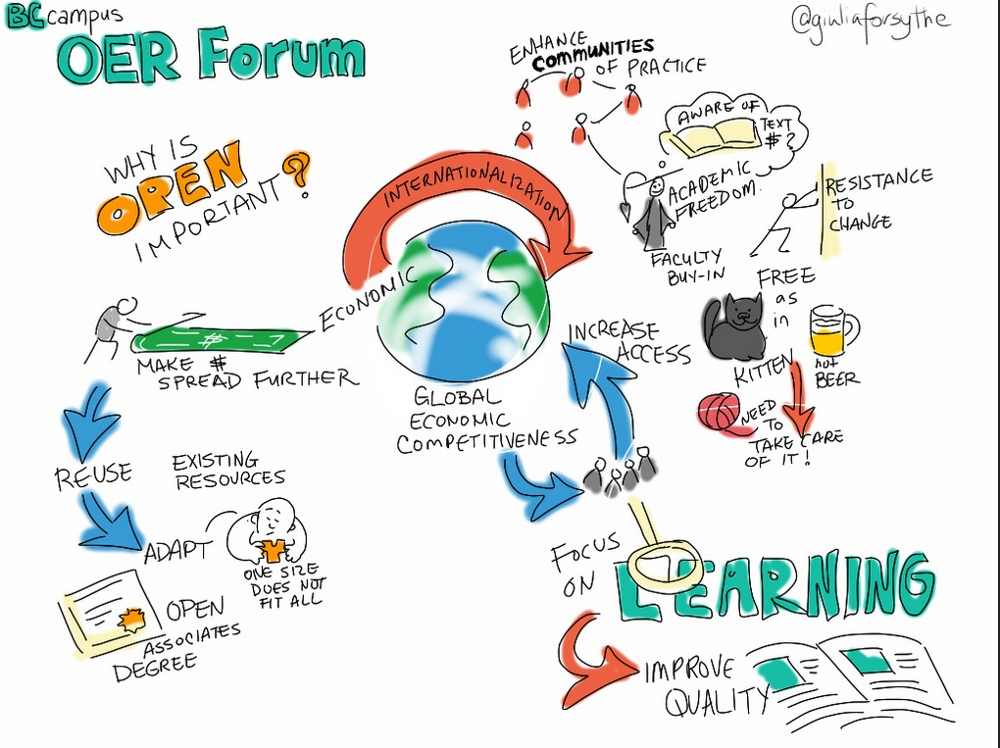
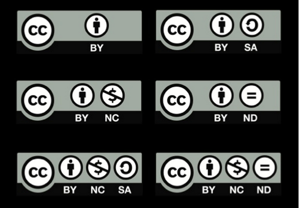

11.2 Recursos educacionais abertos (REA)



Os recursos educacionais abertos (REA) distinguem-se da aprendizagem aberta pelo fato de consistirem predominantemente em conteúdos. A aprendizagem aberta, em contrapartida, integra quer os conteúdos, quer os serviços de suporte educativo, tais como materiais de estudo on-line planejados de raiz, tutoria de apoio ao aluno e avaliação formal.
Os recursos educacionais abertos englobam uma diversidade de formatos digitais, tais como livros didáticos on-line, gravações de vídeo de aulas expositivas, vídeos do YouTube, materiais textuais desenhados para o estudo autônomo, animações e simulações, grafismos e diagramas digitais, determinados MOOCs, ou materiais de avaliação, como testes de correção automática. Os REA podem igualmente incluir apresentações de PowerPoint ou notas de aula em formato PDF. Para preencherem os requisitos de REA, contudo, estes materiais devem ser disponibilizados gratuitamente, no mínimo, para finalidades educativas.
11.2.1 Princípios dos REA
David Wiley constitui um dos pioneiros no domínio dos REA. Em colaboração com outros investigadores, propôs (Hilton et al., 2010) a existência de cinco princípios centrais (os 5Rs) na publicação aberta:
- reutilizar (re-use): o nível básico de abertura. Os utilizadores podem aplicar a totalidade ou parte da obra para finalidades próprias (ex.: descarregar um vídeo educativo para visualização posterior);
- redistribuir (re-distribute): partilhar a obra com terceiros (ex.: enviar um artigo digital por e-mail a um colega);
- revisar (revise): adaptar, modificar, traduzir ou alterar o material (ex.: traduzir um livro escrito em inglês e convertê-lo em audiolivro em espanhol);
- remisturar (re-mix): associar dois ou mais recursos existentes para conceber um novo material (ex.: combinar áudios de aulas de um curso com slides de outra disciplina para conceber um recurso derivado);
- reter (retain): ausência de restrições de gestão de direitos digitais (DRM); o conteúdo pertence ao utilizador (autor, docente ou estudante) para conservação.
Este livro didático aberto preenche os cinco critérios descritos (rege-se por uma licença CC BY-NC — ver Seção 11.2.2 abaixo). Os utilizadores de REA devem verificar os termos da licença de reutilização, dado que podem existir limitações, como no caso desta obra, cuja reprodução para fins comerciais é vedada sem autorização prévia. Especificamente, exige-se a atribuição de autoria ao criador original (BY) e veda-se a sua conversão por uma editora comercial num livro impresso para comercialização lucrativa (NC) na ausência de consentimento por escrito do autor. A salvaguarda dos seus direitos enquanto autor de REA traduz-se habitualmente na publicação sob uma licença Creative Commons ou sob outras licenças de teor aberto.
11.2.2 As licenças Creative Commons
O pressuposto de um autor definir uma licença que autoriza o acesso livre e a adaptação de materiais protegidos por direitos autorais, sem encargos ou necessidade de pedidos formais de autorização, constitui uma das ideias relevantes do século XXI. Esta dinâmica não anula os direitos autorais do criador, mas a licença concede autorização automática para diversas modalidades de utilização sem burocracias ou custos associados.


© The Creative Commons, 2013

Delineiam-se diversas licenças Creative Commons:
- CC BY Atribuição: autoriza a distribuição, remistura, adaptação e desenvolvimento a partir da obra, inclusive para fins comerciais, desde que atribuído o devido crédito ao autor pela criação original. Trata-se da licença de maior flexibilidade, recomendada para maximizar a difusão e utilização dos materiais;
- CC BY-SA (Partilha nos Mesmos Termos): autoriza a remistura, adaptação e desenvolvimento da obra, inclusive para fins comerciais, desde que atribuído o crédito e licenciadas as novas criações sob termos idênticos. Esta opção reveste-se de importância caso o seu trabalho integre materiais de terceiros regulados por licenças Creative Commons equivalentes;
- CC BY-ND (Sem Derivações): autoriza a redistribuição, para fins comerciais e não comerciais, desde que a obra seja transmitida sem alterações e na sua totalidade, com atribuição de crédito ao autor;
- CC BY-NC (Não Comercial): autoriza a remistura, adaptação e desenvolvimento a partir da obra para fins não comerciais. Embora as novas obras devam atribuir o devido crédito e ter pendor não comercial, não se exige o seu licenciamento sob termos idênticos;
- CC BY-NC-SA (Não Comercial - Partilha nos Mesmos Termos): autoriza a remistura, adaptação e desenvolvimento da obra para fins não comerciais, desde que atribuído o crédito e licenciadas as novas criações sob termos idênticos;
- CC BY-NC-ND (Não Comercial - Sem Derivações): a licença de pendor mais restritivo entre as seis principais, autorizando apenas o descarregamento e partilha das obras com atribuição de crédito, vedando alterações e utilizações para fins comerciais.
Caso pretenda disponibilizar os seus próprios materiais sob o formato de recursos educacionais abertos, o processo de seleção e aplicação de uma licença apresenta-se simples (ver Creative Commons Choose a License). Em caso de dúvida, consulte um profissional de biblioteca.
11.2.3 Fontes de REA
Identificam-se diversos repositórios de recursos educacionais abertos (ver, para o ensino superior, portais como MERLOT, OER Commons e, para a educação básica, a plataforma Edutopia). A Open Professionals Education Network disponibiliza um guia útil para a localização e utilização de REA.
No entanto, na pesquisa de potenciais REA na web, verifique a existência de uma licença Creative Commons ou de uma declaração que autorize explicitamente a reutilização. A prática de utilizar materiais gratuitos sem atentar nas questões de direitos autorais é comum, mas encerra riscos na ausência de licença ou autorização explícita. Por exemplo, plataformas como a OpenLearn autorizam unicamente a utilização pessoal para fins não comerciais, o que se traduz em partilhar a ligação (link) com os estudantes em vez de integrar os materiais diretamente na sua disciplina. Em caso de dúvida sobre a autorização de reutilização, consulte os serviços de biblioteca ou de propriedade intelectual da instituição.
11.2.4 Limitações dos REA
A adoção de REA (à exceção dos livros didáticos abertos, analisados na seção seguinte) por parte dos docentes permanece residual, exceptuando os casos dos próprios autores originais dos recursos. No Canadá, em 2017, menos de metade das instituições registava a utilização de REA (Donovan et al., 2018).
11.2.4.1 Questões de qualidade
A crítica principal incide sobre a qualidade insatisfatória de muitos REA atualmente disponíveis: textos extensos sem elementos de interatividade, frequentemente em formato PDF que inviabiliza alterações ou adaptações, simulações rudimentares, grafismos de fraca qualidade técnica e planejamentos letivos que não evidenciam os conceitos acadêmicos a ilustrar.
Falconer (2013), num levantamento sobre as atitudes dos utilizadores face aos REA na Europa, concluiu o seguinte:
A capacidade de a generalidade das pessoas participar na produção de REA — associada a uma desconfiança cultural em relação a recursos gratuitos — gera preocupações nos utilizadores no que se refere à qualidade. Fornecedores e editoras comerciais, que constroem confiança através de publicidade, presença no mercado e produções cuidadas, podem tirar partido desta desconfiança face ao gratuito. A convicção na qualidade constitui um indutor relevante para os projetos de REA, mas a questão das metodologias escaláveis de garantia de qualidade num contexto em que (em princípio) todos podem contribuir permanece por resolver, sendo raramente abordada a questão de saber se a qualidade se transfere de forma inequívoca de um contexto para outro. Sistemas baseados em selos de aprovação não apresentam escalabilidade infinita, e a consistência das avaliações dos utilizadores ou outras medidas de contexto não foram ainda suficientemente exploradas.
Para que os REA registem adesão por parte de outros docentes, torna-se necessário que apresentem um design de qualidade. Não surpreende, por isso, que os REA mais procurados na plataforma iTunes University pertencessem à Open University, até que a instituição estruturou o seu próprio portal de REA, OpenLearn, que disponibiliza maioritariamente materiais textuais das suas disciplinas desenhados especificamente para o estudo on-line autónomo. Mais uma vez, o design pedagógico assume relevância na qualidade de um REA.
11.2.4.2 A autoimagem profissional dos docentes
Hampson (2013) sugeriu outro motivo para a lenta adoção de REA, associado à autoimagem profissional de muitos docentes. Hampson argumenta que os professores universitários não se encaram meramente como "transmissores" de conhecimentos, mas sim como criadores e disseminadores de saberes originais. Deste modo, consideram que o seu ensino deve refletir uma marca pessoal, revelando relutância em integrar ou "copiar" o trabalho de terceiros.
Os REA podem ser associados a um conhecimento "empacotado" e reprodutivo, e não a um trabalho de teor científico original, deslocando o papel do docente de "artista" para "artesão". Pode argumentar-se que esta perspectiva é infundada — todos nos apoiamos em ombros de gigantes —, mas é a autoperceção que assume relevância, registando-se alguma verdade no argumento para professores que desenvolvem investigação científica de ponta. Coaduna-se com o seu perfil focar o ensino na sua própria investigação. Contudo, quantos Richard Feynmans existem no sistema?
11.2.4.3 Gratuito ou aberto?
Registam-se ambiguidades entre o que constitui um recurso "gratuito" (sem custos financeiros) e um recurso "aberto", situação agravada pela ausência de licenciamentos claros em diversos REA. Por exemplo, alguns MOOCs da Coursera são gratuitos, mas não abertos: a reutilização do material desses cursos na sua própria docência sem autorização prévia constitui infração de direitos autorais. A plataforma edX assenta em código aberto (open source), permitindo a outras instituições adaptar o software do portal, mas as instituições na edX tendem a reter os direitos autorais dos conteúdos. Registam-se exceções em ambos os portais, contando alguns MOOCs com licenças abertas.
11.2.4.4 Contextualização dos REA
Outro desafio prende-se com a natureza descontextualizada dos REA. A investigação pedagógica demonstra que a aprendizagem é mais eficaz quando contextualizada (aprendizagem situada), com a participação ativa do aluno na construção do conhecimento e no desenvolvimento de significados complexos. O conteúdo não é estático nem representa uma commodity comercializável. Por outras palavras, a aprendizagem não ocorre de forma passiva. Trata-se de um processo dinâmico que exige questionamento, reajustamento de saberes prévios face a novas teorias, testes de compreensão e feedback. Estas dinâmicas de transição letiva exigem a articulação de reflexão pessoal, orientação por um especialista (o professor) e, sobretudo, interação e feedback com colegas e pares.
A limitação do conteúdo aberto prende-se com o fato de que, na sua formulação pura, se apresenta despido destas componentes de desenvolvimento, contexto e ambiente letivo essenciais para a eficácia pedagógica. Por outras palavras, os REA assemelham-se a matérias-primas que aguardam por tratamento. Trata-se de recursos valiosos, mas que exigem processos de extração, armazenamento, transporte e refinação letiva.
Cumpre dedicar maior atenção às variáveis de contexto que convertem os REA de simples "conteúdos brutos" em experiências de aprendizagem úteis. Os formadores devem estruturar contextos ou ambientes de aprendizagem nos quais os REA se insiram de forma coerente (ver análise no Capítulo 11, Seção 4).
11.2.4.5 Analisar a investigação científica
Para uma síntese útil dos estudos científicos sobre REA, consulte o Review Project do Open Education Group. Outro projeto relevante é o ROER4D, que desenvolve investigação empírica sobre a adoção de REA em países da América do Sul, África Subsariana e Sudeste Asiático.
11.2.5 Como utilizar os REA
Apesar destas limitações, assiste-se a um movimento crescente de docentes a criar recursos educacionais abertos ou a partilhar os seus materiais sob licenças Creative Commons. Multiplicam-se os portais e repositórios de acesso a REA. Com a expansão do volume de conteúdos disponíveis, os docentes encontrarão com maior facilidade os recursos adequados aos seus contextos letivos específicos.
Delineiam-se várias opções de trabalho:
- selecionar REA produzidos por terceiros e incorporá-los ou adaptá-los nas suas disciplinas;
- criar os seus próprios recursos digitais para a sua docência e disponibilizá-los sob licença aberta (ver, por exemplo, o vídeo Creating OER and Combining Licenses da Florida State University);
- estruturar uma disciplina em torno de REA, desafiando os estudantes a pesquisar conteúdos para resolver problemas, elaborar relatórios ou desenvolver projetos de pesquisa (ver Cenário H no início deste capítulo e o Capítulo 11, Seção 4.2);
- adotar um curso integral do portal OERu, estruturando as atividades práticas, as avaliações e assegurando a tutoria de suporte aos estudantes.
Os estudantes podem recorrer aos REA como suporte ao estudo. A título de exemplo, o OpenCourseWare (OCW) do MIT pode ser consultado por interesse pessoal, ou servir de recurso alternativo para alunos que sintam dificuldades em acompanhar os tópicos abordados numa disciplina presencial.
11.2.6 Um esforço compensador
Apesar das limitações e lacunas que os REA possam manifestar atualmente, a sua adoção tende a expandir-se, dado que deixa de fazer sentido conceber todos os recursos a partir do zero quando existem materiais de qualidade acessíveis de forma livre e simples. Analisamos no Capítulo 9 (seleção de mídias) a disponibilidade crescente de recursos abertos de qualidade para utilização pelos professores. Este volume registará acréscimos contínuos. Verificaremos na Seção 11.5 de que forma esta dinâmica alterará o design e a oferta de disciplinas. De fato, os REA constituirão um dos pilares do ensino na era digital.
Referências
Donovan, T. et al. (2018) Tracking Online and Distance Education in Canadian Universities and Colleges: 2018 Halifax NS: Canadian Digital Learning Research Association
Falconer, I. et al. (2013) Overview and Analysis of Practices with Open Educational Resources in Adult Education in Europe Seville, Spain: European Commission Institute for Prospective Technological Studies
Hampson, K. (2013) The next chapter for digital instructional media: content as a competitive difference Vancouver BC: COHERE 2013 conference
Hilton, J., et al. (2010). The four R’s of openness and ALMS Analysis: Frameworks for open educational resources Open Learning: The Journal of Open and Distance Learning, 25(1), 37–44
Atividade 11.2 Decidindo sobre REA
- Já utilizou REA nas suas disciplinas? Trata-se de uma experiência positiva ou negativa?
- Caso não tenha utilizado REA, qual o motivo principal? Pesquisou os recursos disponíveis na sua área científica? Qual a sua apreciação sobre a qualidade? De que forma poderiam ser melhorados?
- Sob quais condições estaria disposto a disponibilizar ou adaptar os seus próprios materiais sob a forma de REA?